Extreme pH Profiles
Pasqualina Vonlanthen & Jens Daniel Müller
06 January, 2022
Last updated: 2022-01-06
Checks: 7 0
Knit directory: bgc_argo_r_argodata/
This reproducible R Markdown analysis was created with workflowr (version 1.6.2). The Checks tab describes the reproducibility checks that were applied when the results were created. The Past versions tab lists the development history.
Great! Since the R Markdown file has been committed to the Git repository, you know the exact version of the code that produced these results.
Great job! The global environment was empty. Objects defined in the global environment can affect the analysis in your R Markdown file in unknown ways. For reproduciblity it’s best to always run the code in an empty environment.
The command set.seed(20211008) was run prior to running the code in the R Markdown file. Setting a seed ensures that any results that rely on randomness, e.g. subsampling or permutations, are reproducible.
Great job! Recording the operating system, R version, and package versions is critical for reproducibility.
Nice! There were no cached chunks for this analysis, so you can be confident that you successfully produced the results during this run.
Great job! Using relative paths to the files within your workflowr project makes it easier to run your code on other machines.
Great! You are using Git for version control. Tracking code development and connecting the code version to the results is critical for reproducibility.
The results in this page were generated with repository version f53cc2d. See the Past versions tab to see a history of the changes made to the R Markdown and HTML files.
Note that you need to be careful to ensure that all relevant files for the analysis have been committed to Git prior to generating the results (you can use wflow_publish or wflow_git_commit). workflowr only checks the R Markdown file, but you know if there are other scripts or data files that it depends on. Below is the status of the Git repository when the results were generated:
Ignored files:
Ignored: .RData
Ignored: .Rhistory
Ignored: .Rproj.user/
Ignored: analysis/figure/
Ignored: output/
Untracked files:
Untracked: code/OceanSODA_argo_extremes.R
Untracked: code/creating_dataframe.R
Untracked: code/creating_map.R
Untracked: code/merging_oceanSODA_Argo.R
Untracked: code/pH_data_timeseries.R
Note that any generated files, e.g. HTML, png, CSS, etc., are not included in this status report because it is ok for generated content to have uncommitted changes.
These are the previous versions of the repository in which changes were made to the R Markdown (analysis/extreme_pH.Rmd) and HTML (docs/extreme_pH.html) files. If you’ve configured a remote Git repository (see ?wflow_git_remote), click on the hyperlinks in the table below to view the files as they were in that past version.
| File | Version | Author | Date | Message |
|---|---|---|---|---|
| Rmd | f53cc2d | pasqualina-vonlanthendinenna | 2022-01-06 | updated profile page |
| html | b8a6482 | pasqualina-vonlanthendinenna | 2022-01-03 | Build site. |
| Rmd | 054f8a6 | pasqualina-vonlanthendinenna | 2022-01-03 | added Argo profiles |
Task
Compare depth profiles of normal pH and of extreme pH, as identified in the surface OceanSODA pH data product
theme_set(theme_bw())Load data
path_argo <- '/nfs/kryo/work/updata/bgc_argo_r_argodata'
path_argo_preprocessed <- paste0(path_argo, "/preprocessed_bgc_data")
path_emlr_utilities <- "/nfs/kryo/work/jenmueller/emlr_cant/utilities/files/"region_masks_all_1x1 <- read_rds(file = paste0(path_argo_preprocessed,
"/region_masks_all_1x1.rds"))
OceanSODA <- read_rds(file = paste0(path_argo_preprocessed, "/OceanSODA.rds"))
# keep only Southern Ocean data (southern ocean RECCAP biomes)
OceanSODA_SO <-
inner_join(region_masks_all_1x1, OceanSODA) %>%
filter(region == 'southern',
value != 0) %>%
mutate(month = month(date)) %>%
mutate(date = format_ISO8601(date, precision = 'ym'))
# add in basin separations
basinmask <-
read_csv(paste(path_emlr_utilities,
"basin_mask_WOA18.csv",
sep = ""),
col_types = cols("MLR_basins" = col_character()))
basinmask <- basinmask %>%
filter(MLR_basins == unique(basinmask$MLR_basins)[1]) %>%
select(lon, lat, basin_AIP)
OceanSODA_SO <- inner_join(OceanSODA_SO, basinmask)OceanSODA pH
Climatological monthly OceanSODA pH and the 5th and 95th percentiles, calculated for 2013-2021, with the full spatial OceanSODA data
# calculate climatological average OceanSODA pH, and the 95th percentile of the monthly OceanSODA pH
OceanSODA_SO_clim <- OceanSODA_SO %>%
group_by(lon, lat, month) %>%
summarise(
clim_OceanSODA_ph = mean(ph_total, na.rm = TRUE),
threshold_high = quantile(ph_total, 0.95, na.rm = TRUE),
threshold_low = quantile(ph_total, 0.05, na.rm = TRUE)
) %>%
ungroup()
OceanSODA_SO_extreme <- inner_join(OceanSODA_SO, OceanSODA_SO_clim,
by = c('lon', 'lat', 'month'))Calculate extreme OceanSODA pH, L for abnormally low, H for abnormally high, N for normal pH
# when the in-situ OceanSODA pH is lower than the 5th percentile, assign 'L' for low extreme
# when the in-situ OceanSODA pH exceeds the 95th percentile, assign 'H' for high extreme
# when the in-situ OceanSODA pH is within 95% of the range, then assign 'N' for normal pH
OceanSODA_SO_extreme <- OceanSODA_SO_extreme %>%
mutate(extreme = case_when(ph_total < threshold_low ~ 'L',
ph_total > threshold_high ~ 'H',
TRUE ~ 'N')) %>%
drop_na()Location of OceanSODA pH extremes
OceanSODA_SO_extreme %>%
group_split(year) %>%
map(
~ basemap(limits = -32, data = .x)+
geom_spatial_tile(data = .x,
aes(x = lon,
y = lat,
fill = extreme),
linejoin = 'mitre',
col = 'transparent',
detail = 60) +
facet_wrap(~month, ncol = 2)+
labs(title = paste('OceanSODA pH (High/Low/Normal)', unique(.x$year)),
fill = 'pH')
)[[1]]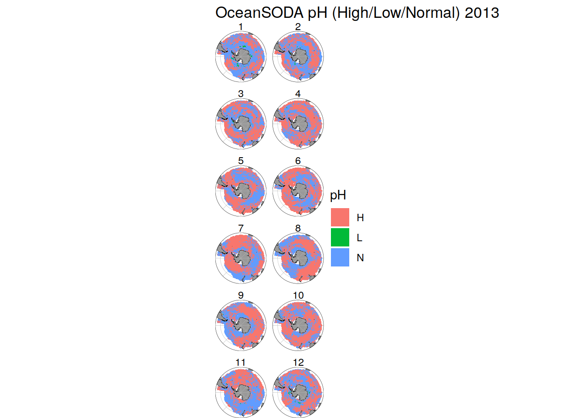
[[2]]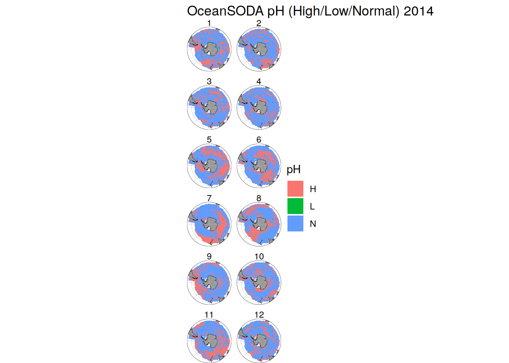
[[3]]
[[4]]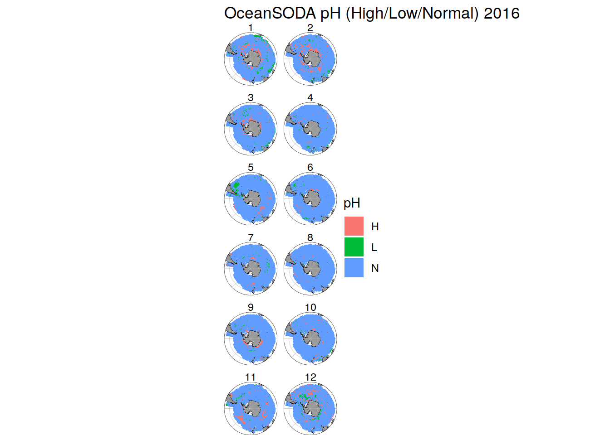
[[5]]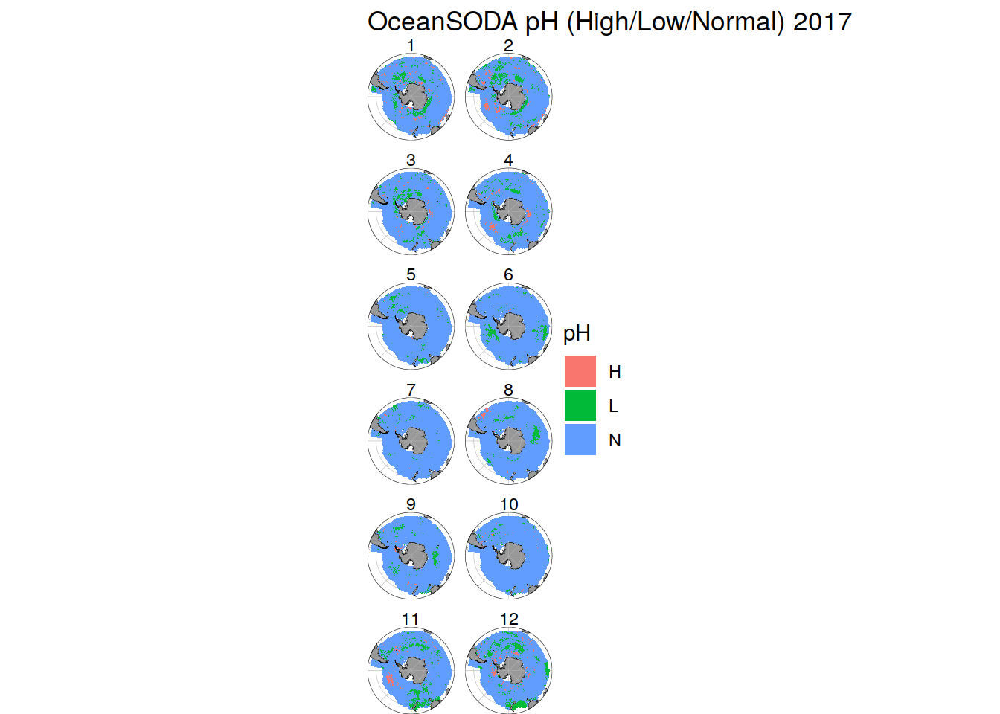
[[6]]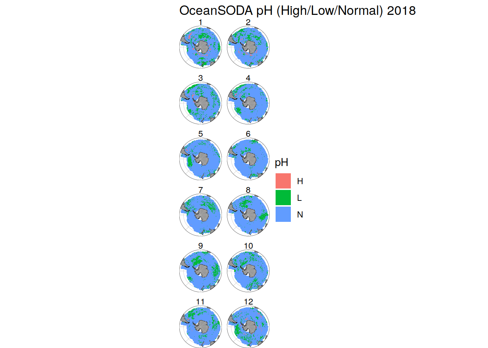
[[7]]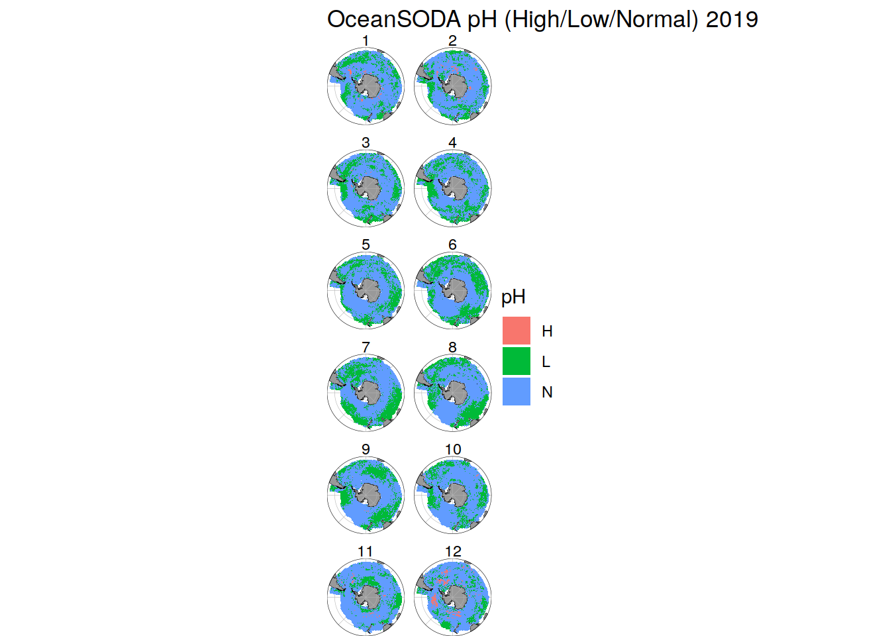
[[8]]
# OceanSODA_SO_extreme %>%
# filter(year == 2013) %>%
# basemap(limits = -32, data = filter(OceanSODA_SO_extreme, year == 2013))+
# geom_spatial_tile(data = filter(OceanSODA_SO_extreme, year == 2013),
# aes(x = lon,
# y = lat,
# fill = extreme),
# linejoin = 'mitre',
# col = 'transparent',
# detail = 60)+
# facet_wrap(~month, ncol = 2)+
# labs(title = 'OceanSODA pH (High/Low/Normal) 2013',
# fill = 'pH')OceanSODA pH timeseries
# calculate a regional mean pH for each biome, basin, and ph extreme (H/L/N) and plot a timeseries
OceanSODA_SO_extreme %>%
group_by(date, value, basin_AIP, extreme) %>%
summarise(ph_regional = mean(ph_total)) %>%
ggplot(aes(x = date, y = ph_regional, group = extreme, col = extreme))+
geom_point()+
geom_line()+
scale_x_discrete(breaks = c('2013-01', '2014-01', '2015-01', '2016-01', '2017-01', '2018-01', '2019-01', '2020-01'))+
facet_grid(basin_AIP~value)+
labs(title = 'OceanSODA pH (High/Low/Normal)',
x = 'date',
y = 'regional mean pH',
col = 'High / Low / Normal pH') +
theme(legend.position = 'bottom')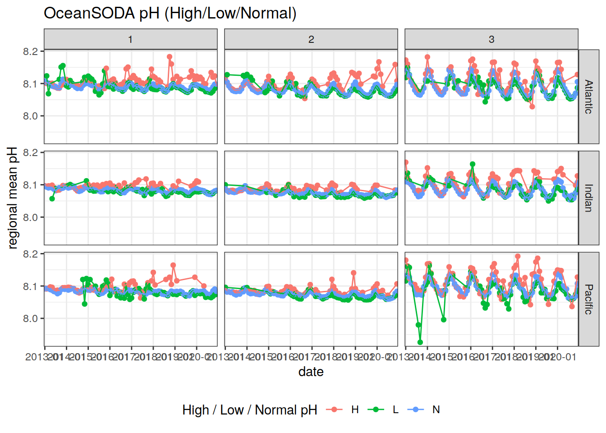
Argo data
Load in full Argo data
# load in the full argo data
full_argo <- read_rds(file = paste0(path_argo_preprocessed, "/bgc_merge.rds"))
# change the date format for compatibility with OceanSODA pH data
full_argo <- full_argo %>%
mutate(year = year(date),
month = month(date)) %>%
mutate(date = format_ISO8601(date, precision = 'ym')) %>%
select(depth:platform_number,
cycle_number,
float_serial_no,
date,
lat,
lon,
profile_pres_qc:profile_ph_in_situ_total_qc) %>%
filter(ph_in_situ_total_adjusted_qc == '1')
# add in RECCAP biomes, and keep only Southern Ocean argo data
full_argo <- inner_join(full_argo, region_masks_all_1x1)
full_argo_SO <- full_argo %>%
filter(region == 'southern',
value != 0)
# add in basin separations to full profile argo data
full_argo_SO <- inner_join(full_argo_SO, basinmask)
# rename OceanSODA columns
OceanSODA_SO_extreme <- OceanSODA_SO_extreme %>%
rename(OceanSODA_ph_uncert = ph_total_uncert,
OceanSODA_ph = ph_total)# combine the argo profile data to the surface extreme data
profile_extreme <- inner_join(full_argo_SO, OceanSODA_SO_extreme)Calculate mean monthly profiles
# calculate mean profiles in each basin and biome, for each month between 2014 and 2021
monthly_profile_extreme <- profile_extreme %>%
mutate(depth = round(depth, digits = 0)) %>%
group_by(year, month, value, basin_AIP, extreme, depth) %>%
summarise(mean_ph = mean(ph_in_situ_total_adjusted, na.rm = TRUE),
mean_temp = mean(temp_adjusted, na.rm = TRUE))Argo profiles
Argo profiles plotted according to the surface OceanSODA pH
L profiles correspond to a surface acidification event (low pH), as recorded in OceanSODA
H profiles correspond to an event of high surface pH, as recorded in OceanSODA
N profiles correspond to normal surface OceanSODA pH
Atlantic basin
2019
pH
profile_extreme %>%
filter(basin_AIP == 'Atlantic',
year == '2019') %>%
group_split(value) %>%
map(
~ ggplot(data = .x,
aes(x = ph_in_situ_total_adjusted,
y = depth,
group = extreme,
col = extreme))+
geom_point(pch = 19, size = 0.5)+
scale_y_reverse()+
theme_bw()+
facet_wrap(~month, ncol = 6)+
labs(x = 'Argo pH (total scale)',
y = 'depth (m)',
title = paste('Atlantic basin, 2019, biome', unique(.x$value)),
col = 'OceanSODA pH \n(high/low/normal)')
)[[1]]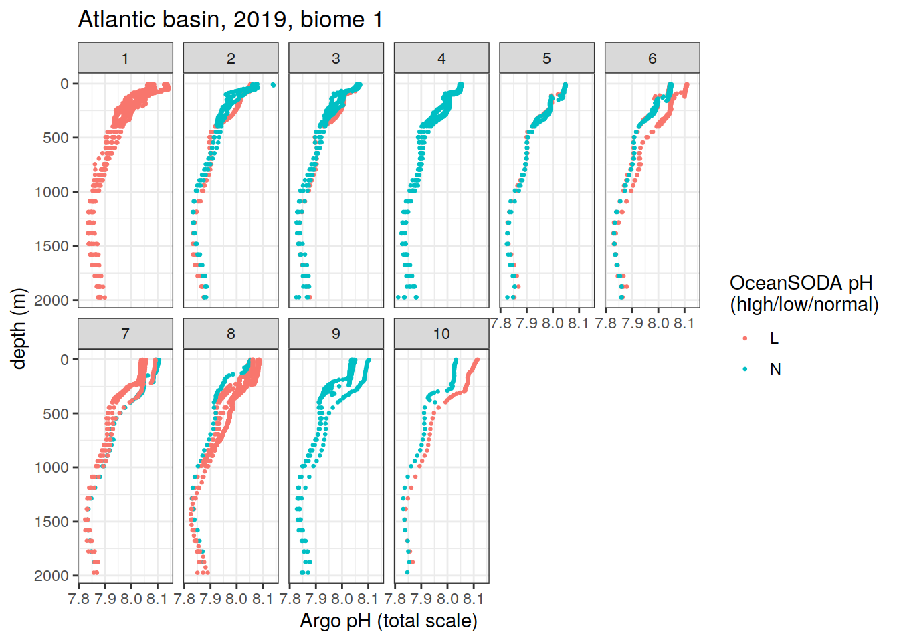
| Version | Author | Date |
|---|---|---|
| b8a6482 | pasqualina-vonlanthendinenna | 2022-01-03 |
[[2]]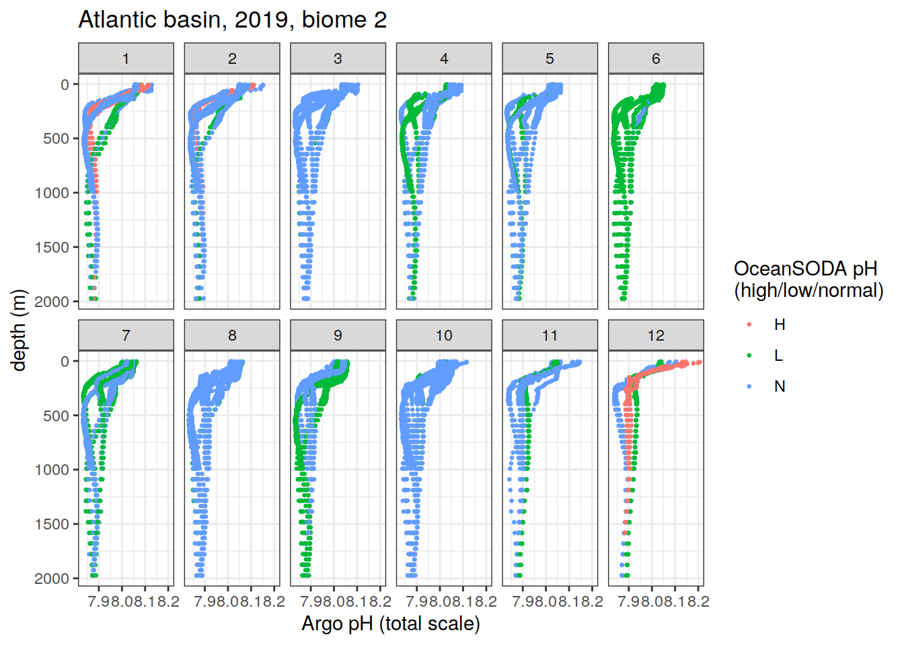
| Version | Author | Date |
|---|---|---|
| b8a6482 | pasqualina-vonlanthendinenna | 2022-01-03 |
[[3]]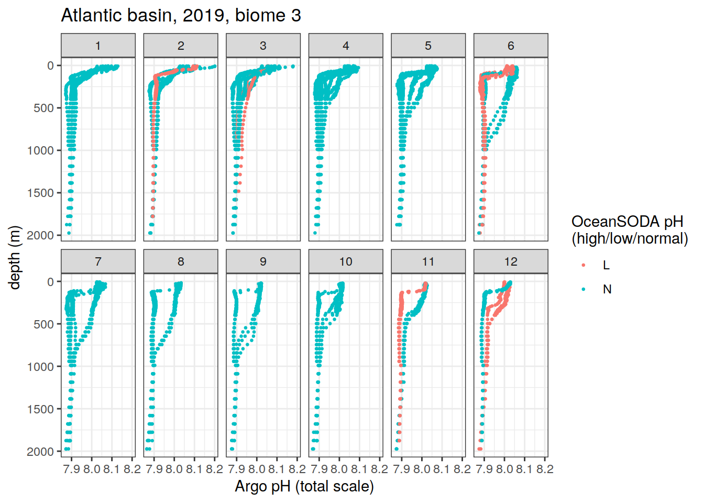
| Version | Author | Date |
|---|---|---|
| b8a6482 | pasqualina-vonlanthendinenna | 2022-01-03 |
Temperature
# plot temperature profiles for the Atlantic
profile_extreme %>%
filter(basin_AIP == 'Atlantic',
year == '2019') %>%
group_split(value) %>%
map(
~ ggplot(data = .x,
aes(x = temp_adjusted,
y = depth,
group = extreme,
col = extreme))+
geom_point(pch = 19, size = 0.5)+
scale_y_reverse()+
theme_bw()+
facet_wrap(~month, ncol = 6)+
labs(x = 'Argo temperature (ºC)',
y = 'depth (m)',
title = paste('Atlantic basin, 2019, biome', unique(.x$value)),
col = 'OceanSODA pH \n(high/low/normal)')
)[[1]]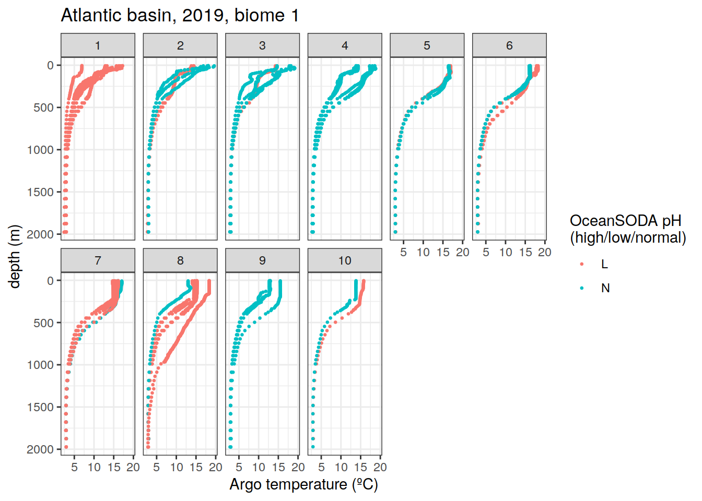
| Version | Author | Date |
|---|---|---|
| b8a6482 | pasqualina-vonlanthendinenna | 2022-01-03 |
[[2]]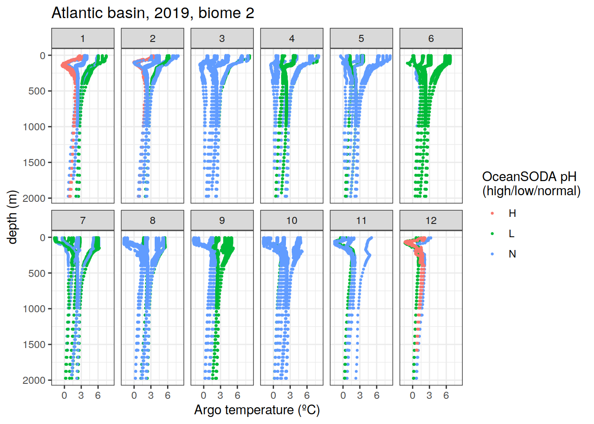
| Version | Author | Date |
|---|---|---|
| b8a6482 | pasqualina-vonlanthendinenna | 2022-01-03 |
[[3]]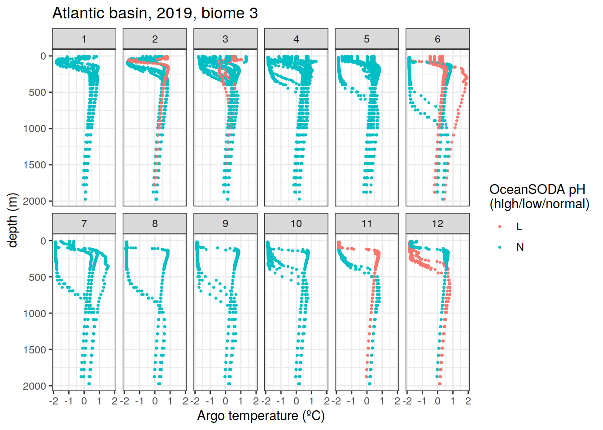
| Version | Author | Date |
|---|---|---|
| b8a6482 | pasqualina-vonlanthendinenna | 2022-01-03 |
Pacific basin
2019
pH
profile_extreme %>%
filter(basin_AIP == 'Pacific',
year == '2019') %>%
group_split(value) %>%
map(
~ ggplot(data = .x,
aes(x = ph_in_situ_total_adjusted,
y = depth,
group = extreme,
col = extreme))+
geom_point(pch = 19, size = 0.5)+
scale_y_reverse()+
theme_bw()+
facet_wrap(~month, ncol = 6)+
labs(x = 'Argo pH (total scale)',
y = 'depth (m)',
title = paste('Pacific basin, 2019, biome', unique(.x$value)),
col = 'OceanSODA pH \n(high/low/normal)')
)[[1]]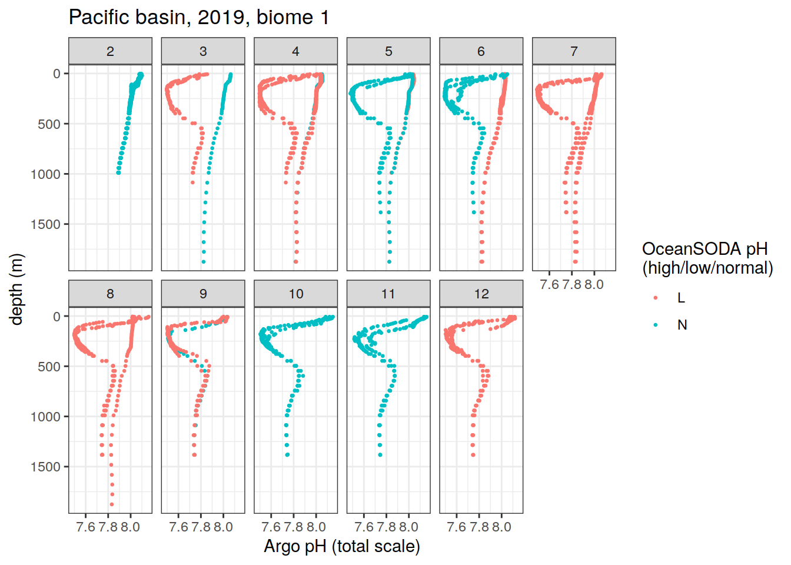
| Version | Author | Date |
|---|---|---|
| b8a6482 | pasqualina-vonlanthendinenna | 2022-01-03 |
[[2]]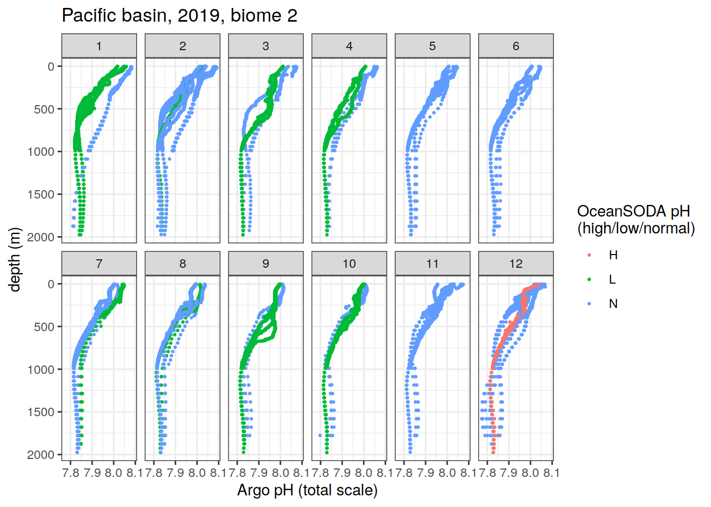
| Version | Author | Date |
|---|---|---|
| b8a6482 | pasqualina-vonlanthendinenna | 2022-01-03 |
[[3]]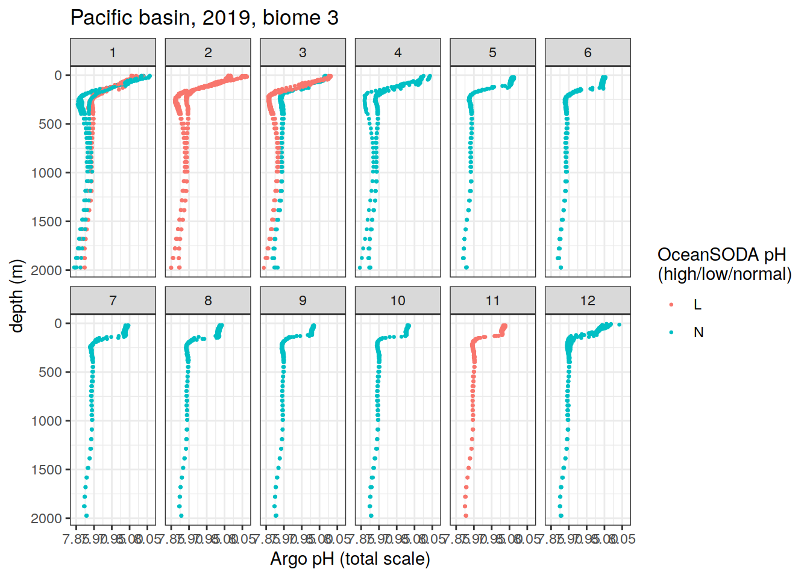
| Version | Author | Date |
|---|---|---|
| b8a6482 | pasqualina-vonlanthendinenna | 2022-01-03 |
Temperature
profile_extreme %>%
filter(basin_AIP == 'Pacific',
year == '2019') %>%
group_split(value) %>%
map(
~ ggplot(data = .x,
aes(x = temp_adjusted,
y = depth,
group = extreme,
col = extreme))+
geom_point(pch = 19, size = 0.5)+
scale_y_reverse()+
theme_bw()+
facet_wrap(~month, ncol = 6)+
labs(x = 'Argo temperature (ºC)',
y = 'depth (m)',
title = paste('Pacific basin, 2019, biome', unique(.x$value)),
col = 'OceanSODA pH \n(high/low/normal)')
)[[1]]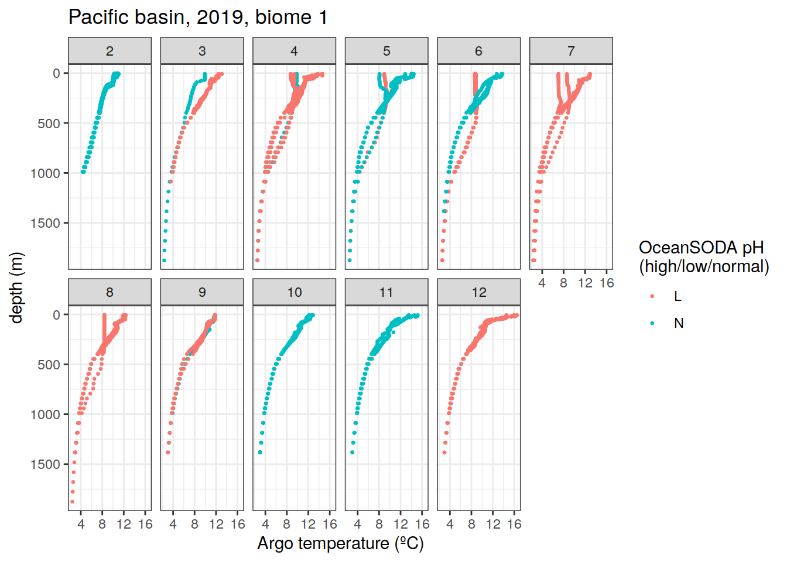
| Version | Author | Date |
|---|---|---|
| b8a6482 | pasqualina-vonlanthendinenna | 2022-01-03 |
[[2]]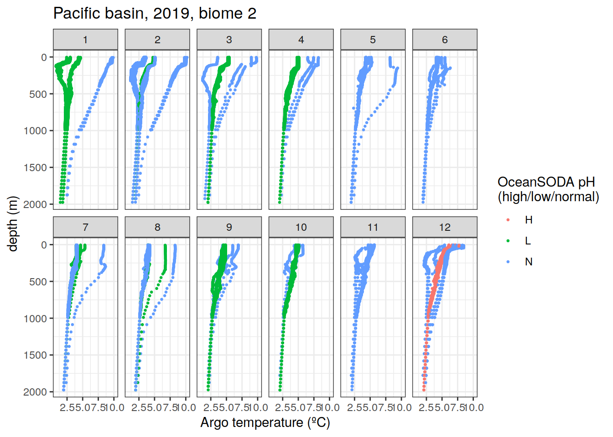
| Version | Author | Date |
|---|---|---|
| b8a6482 | pasqualina-vonlanthendinenna | 2022-01-03 |
[[3]]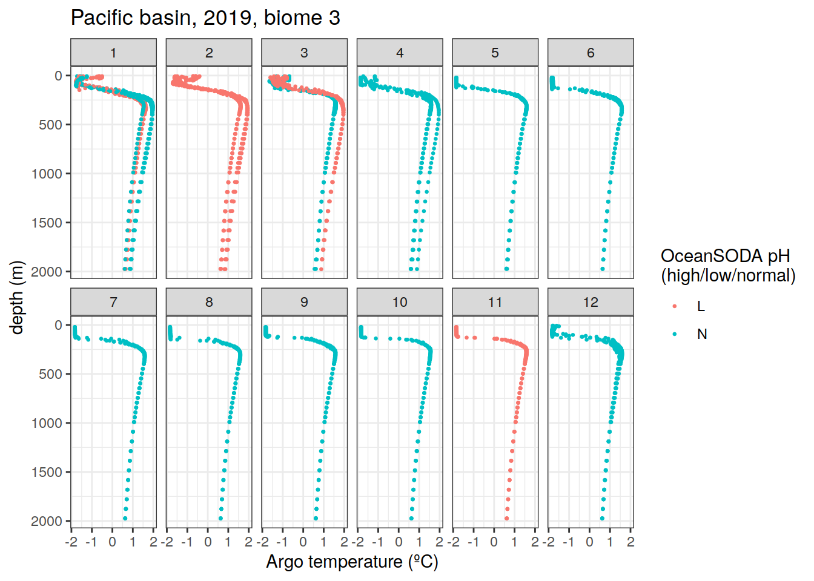
| Version | Author | Date |
|---|---|---|
| b8a6482 | pasqualina-vonlanthendinenna | 2022-01-03 |
Indian basin
2019
pH
profile_extreme %>%
filter(basin_AIP == 'Indian',
year == '2019') %>%
group_split(value) %>%
map(
~ ggplot(data = .x,
aes(x = ph_in_situ_total_adjusted,
y = depth,
group = extreme,
col = extreme))+
geom_point(pch = 19, size = 0.5)+
scale_y_reverse()+
theme_bw()+
facet_wrap(~month, ncol = 6)+
labs(x = 'Argo pH (total scale)',
y = 'depth (m)',
title = paste('Indian basin, 2019, biome', unique(.x$value)),
col = 'OceanSODA pH \n(high/low/normal)')
)[[1]]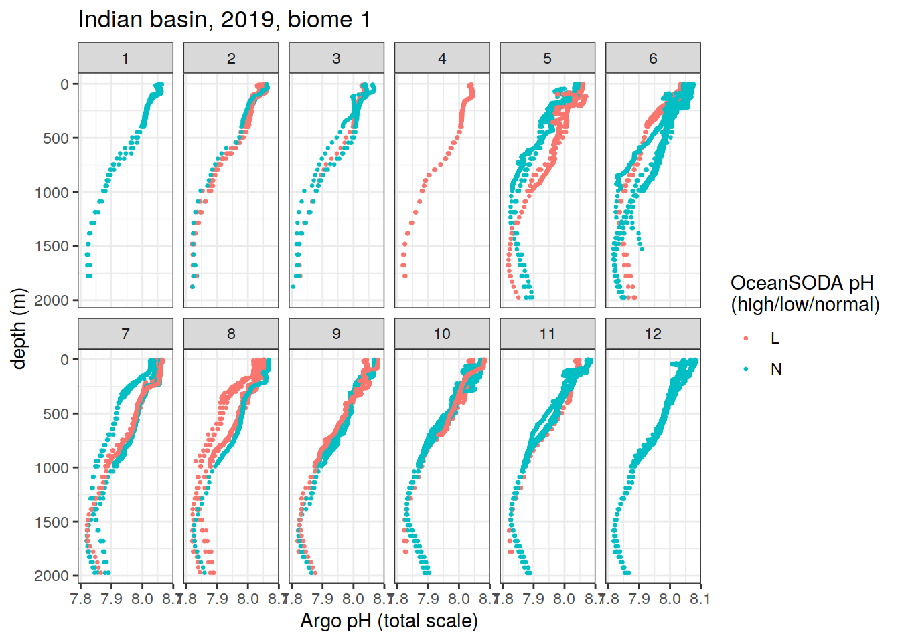
| Version | Author | Date |
|---|---|---|
| b8a6482 | pasqualina-vonlanthendinenna | 2022-01-03 |
[[2]]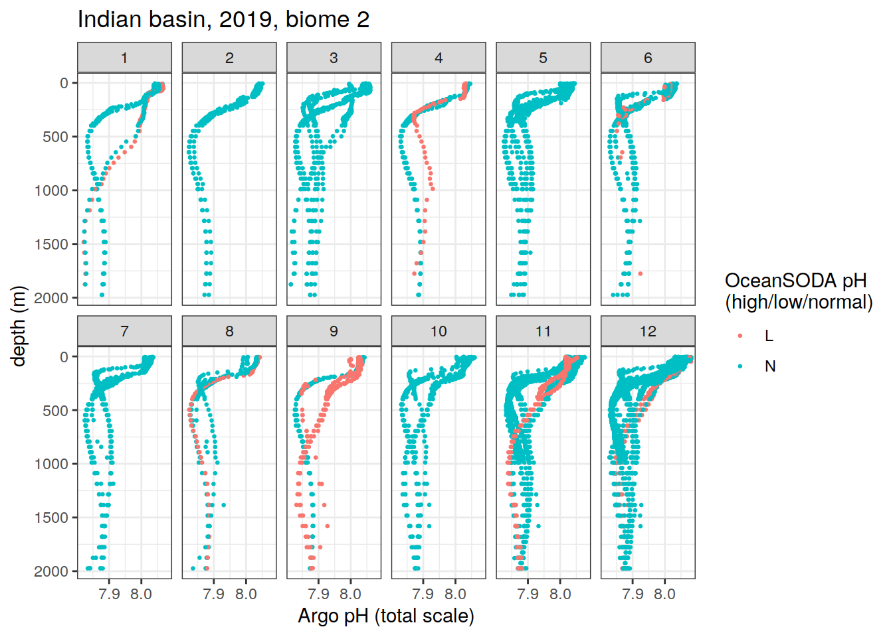
| Version | Author | Date |
|---|---|---|
| b8a6482 | pasqualina-vonlanthendinenna | 2022-01-03 |
[[3]]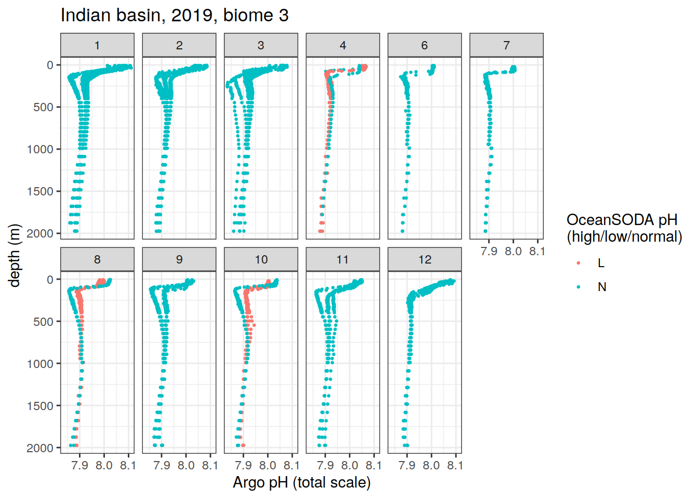
| Version | Author | Date |
|---|---|---|
| b8a6482 | pasqualina-vonlanthendinenna | 2022-01-03 |
Temperature
profile_extreme %>%
filter(basin_AIP == 'Indian',
year == '2019') %>%
group_split(value) %>%
map(
~ ggplot(data = .x,
aes(x = temp_adjusted,
y = depth,
group = extreme,
col = extreme))+
geom_point(pch = 19, size = 0.5)+
scale_y_reverse()+
theme_bw()+
facet_wrap(~month, ncol = 6)+
labs(x = 'Argo temperature (ºC))',
y = 'depth (m)',
title = paste('Indian basin, 2019, biome', unique(profile_extreme$value)),
col = 'OceanSODA pH \n(high/low/normal)')
)[[1]]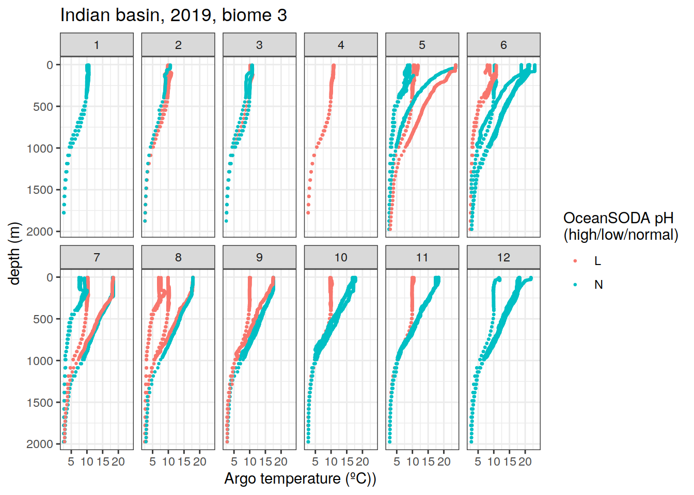
| Version | Author | Date |
|---|---|---|
| b8a6482 | pasqualina-vonlanthendinenna | 2022-01-03 |
[[2]]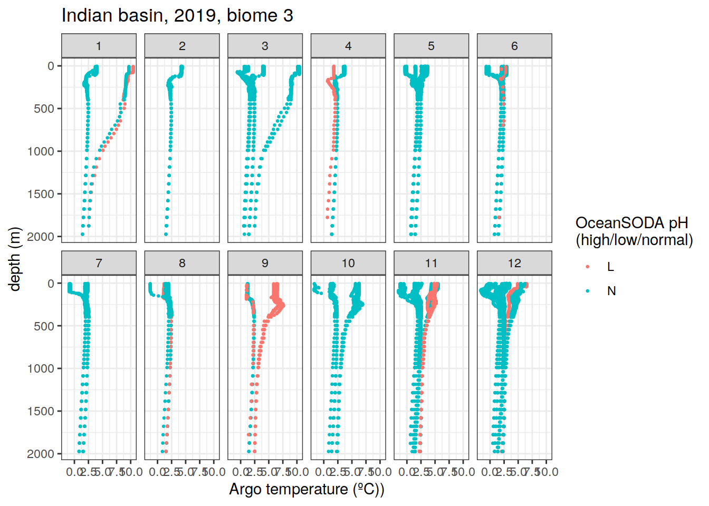
| Version | Author | Date |
|---|---|---|
| b8a6482 | pasqualina-vonlanthendinenna | 2022-01-03 |
[[3]]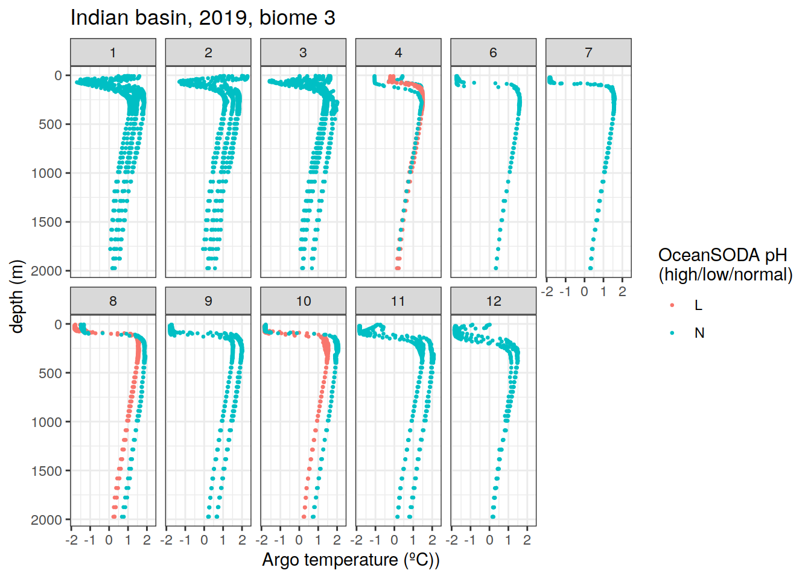
| Version | Author | Date |
|---|---|---|
| b8a6482 | pasqualina-vonlanthendinenna | 2022-01-03 |
Mean monthly profiles
# monthly_profile_extreme %>%
# group_split(year, basin_AIP, value) %>%
# map(
# ~ggplot(data = .x,
# aes(x = mean_ph,
# y = depth,
# group = extreme,
# col = extreme))+
# geom_point(size = 0.3)+
# scale_y_reverse()+
# facet_wrap(~month)
# )
monthly_profile_extreme %>%
ggplot(aes(x = mean_ph,
y = depth,
group = extreme,
col = extreme))+
geom_point(size = 0.3)+
scale_y_reverse()+
facet_grid(basin_AIP~value)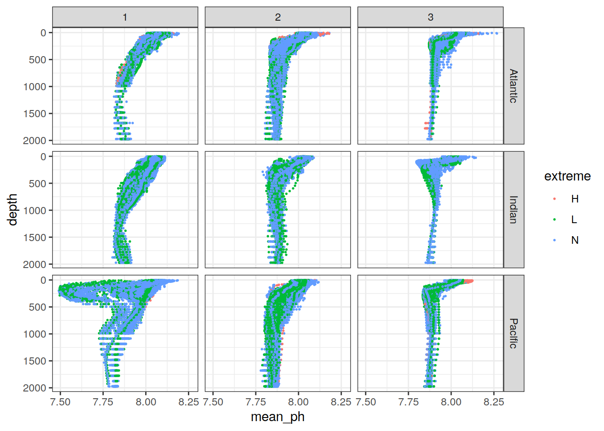
sessionInfo()R version 4.0.3 (2020-10-10)
Platform: x86_64-pc-linux-gnu (64-bit)
Running under: openSUSE Leap 15.3
Matrix products: default
BLAS: /usr/local/R-4.0.3/lib64/R/lib/libRblas.so
LAPACK: /usr/local/R-4.0.3/lib64/R/lib/libRlapack.so
locale:
[1] LC_CTYPE=en_US.UTF-8 LC_NUMERIC=C
[3] LC_TIME=en_US.UTF-8 LC_COLLATE=en_US.UTF-8
[5] LC_MONETARY=en_US.UTF-8 LC_MESSAGES=en_US.UTF-8
[7] LC_PAPER=en_US.UTF-8 LC_NAME=C
[9] LC_ADDRESS=C LC_TELEPHONE=C
[11] LC_MEASUREMENT=en_US.UTF-8 LC_IDENTIFICATION=C
attached base packages:
[1] stats graphics grDevices utils datasets methods base
other attached packages:
[1] ggOceanMaps_1.2.4 ggspatial_1.1.5 lubridate_1.7.9 forcats_0.5.0
[5] stringr_1.4.0 dplyr_1.0.7 purrr_0.3.4 readr_1.4.0
[9] tidyr_1.1.4 tibble_3.1.6 ggplot2_3.3.5 tidyverse_1.3.0
[13] workflowr_1.6.2
loaded via a namespace (and not attached):
[1] httr_1.4.2 sass_0.4.0 jsonlite_1.7.2
[4] modelr_0.1.8 bslib_0.2.5.1 assertthat_0.2.1
[7] highr_0.8 sp_1.4-6 blob_1.2.1
[10] cellranger_1.1.0 yaml_2.2.1 pillar_1.6.4
[13] backports_1.1.10 lattice_0.20-41 glue_1.6.0
[16] digest_0.6.29 promises_1.2.0.1 rvest_0.3.6
[19] colorspace_2.0-2 htmltools_0.5.1.1 httpuv_1.6.2
[22] pkgconfig_2.0.3 broom_0.7.9 raster_3.5-11
[25] haven_2.3.1 scales_1.1.1 whisker_0.4
[28] ggOceanMapsData_1.2 terra_1.4-22 later_1.3.0
[31] git2r_0.27.1 proxy_0.4-26 farver_2.1.0
[34] generics_0.1.1 ellipsis_0.3.2 withr_2.4.3
[37] cli_3.1.0 magrittr_2.0.1 crayon_1.4.2
[40] readxl_1.3.1 evaluate_0.14 fs_1.5.2
[43] fansi_0.5.0 xml2_1.3.2 class_7.3-17
[46] tools_4.0.3 hms_1.1.1 lifecycle_1.0.1
[49] munsell_0.5.0 reprex_0.3.0 compiler_4.0.3
[52] jquerylib_0.1.4 e1071_1.7-9 rlang_0.4.12
[55] classInt_0.4-3 units_0.7-2 grid_4.0.3
[58] rstudioapi_0.13 labeling_0.4.2 rmarkdown_2.10
[61] gtable_0.3.0 codetools_0.2-16 DBI_1.1.2
[64] R6_2.5.1 rgdal_1.5-28 knitr_1.33
[67] rgeos_0.5-9 utf8_1.2.2 rprojroot_2.0.2
[70] KernSmooth_2.23-17 stringi_1.7.6 parallel_4.0.3
[73] Rcpp_1.0.7 vctrs_0.3.8 sf_1.0-5
[76] dbplyr_1.4.4 tidyselect_1.1.1 xfun_0.25